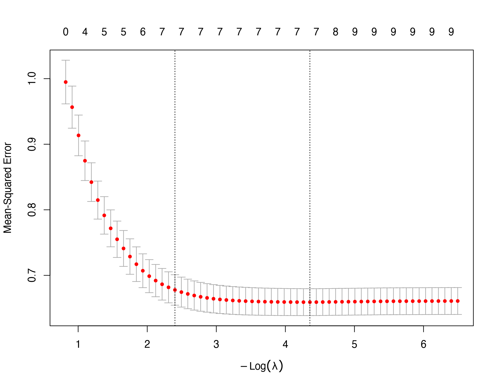
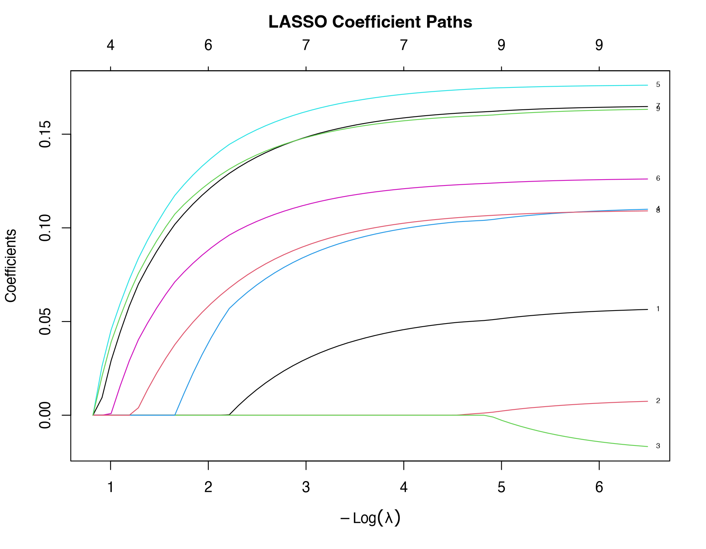
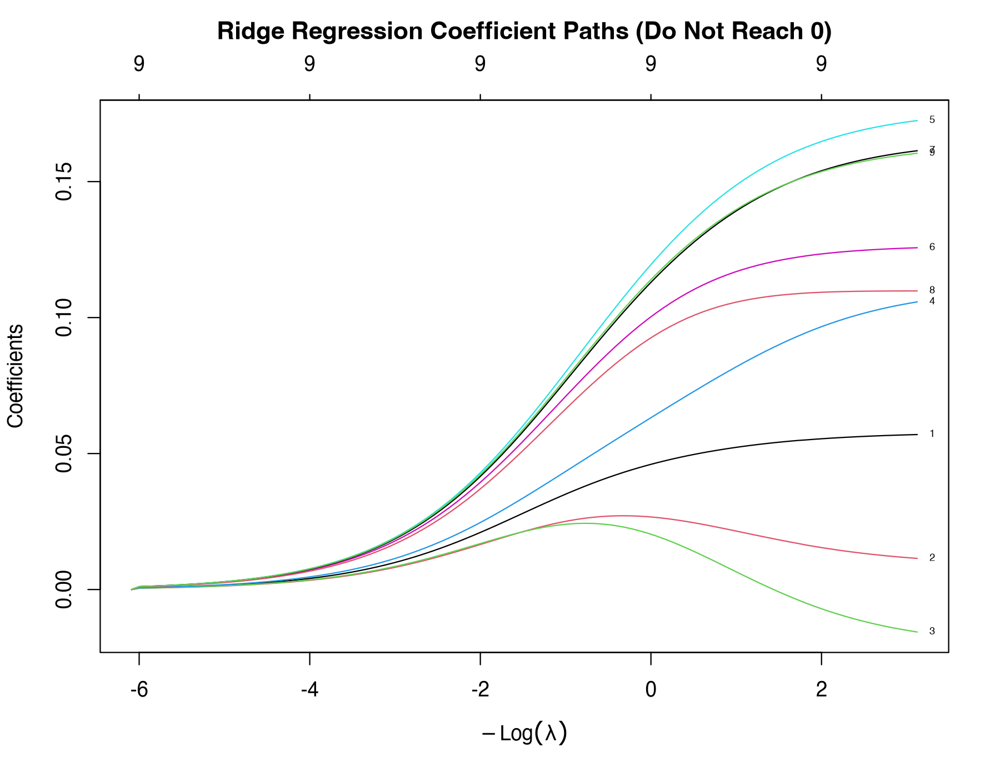

Overfitting and Regularization: Ridge, LASSO, and Cross-Validation
Learning Objectives
- Understand overfitting: with many variables and a small sample, a model 'memorizes noise'
- Understand how LASSO, by penalizing the absolute values of the coefficients, pushes small coefficients to 0 (automatic variable selection)
- Understand the tuning parameter λ and k-fold cross-validation, and tell lambda.min from lambda.1se
- Run glmnet / cv.glmnet in R for the first time
Core Concepts
- overfitting
- bias–variance trade-off
- regularization
- ridge regression
- LASSOleast absolute shrinkage and selection operator
- elastic net
- tuning parameter, lambda
- cross-validation, CV
- sparsity
Lesson structure: Intuition → Essential Math → R Code → Concept Check → Exercises → Summary. You can drag or click the interactive figures; a wrong quiz answer first gets a hint, and after two wrong answers you can see the explanation.
① IntuitionA Model That Memorizes the Answers
Xiao Li was preparing for the social worker licensing exam. He memorized every question and answer from the last three years of past papers and scored 100% on practice tests built from those papers. The real exam had new questions, and he scored 55. What he had learned was not the pattern but the accidental details of those particular papers. Statistical models make the same mistake, called overfitting: when there are many predictors and few cases, the model "memorizes" random noise in the sample as if it were a pattern. It fits the data at hand very well (low training error) and predicts a new batch of data poorly.
In the widget above, as model complexity (the polynomial degree) goes up, training error keeps falling, while error on new data first falls and then rises. The best model is not the most complex one but one in the middle. This is the bias–variance trade-off:
- Bias: the model is too simple and systematically misses the real pattern (for example, fitting an S-shaped curve with a straight line).
- Variance: the model is too flexible, so the estimates change a lot from one sample to the next (it chases noise).
Simple models have high bias and low variance; complex models have low bias and high variance. You want the balance point that gives the smallest total error on new data.
Why does CLPN need to worry about overfitting?
In a CLPN, every T2 node is predicted from all T1 nodes. With 9 nodes you estimate 9 × 9 = 81 directed edges; with 20 nodes, 400. Many of the real edges may be 0 or close to it, but ordinary regression (OLS) gives every edge a nonzero estimate, and many of those are just noise. You saw this in the Lesson 3.2 exercises: the population target for lone4 → dep1 is almost 0, yet OLS gave it 0.09. Drawn as a network, the plot fills up with small spurious edges and suggests that everything is connected to everything.
Regularization: a tax on coefficients
The idea of regularization: besides the fit error, add a penalty on the size of the coefficients. For the model to give a variable a large coefficient, the improvement in fit from that variable has to outweigh the penalty.
Imagine that every coefficient pays a tax, and larger coefficients pay more. Variables that really help (they improve the fit a lot) can afford the tax and stay in. Variables that improve the fit only a little (mostly noise) are not worth the tax, so their coefficients are shrunk, or pushed all the way to 0. The tax rate is the tuning parameter λ: λ = 0 means no tax, which is ordinary regression; a very large λ pushes every coefficient to 0.
Two common tax systems:
- ridge regression: the tax is based on the squared coefficient. All coefficients shrink proportionally, but none becomes exactly 0.
- LASSO (least absolute shrinkage and selection operator) (Tibshirani, 1996): the tax is based on the absolute value of the coefficient. Small coefficients are pushed to exactly 0, which amounts to automatic variable selection. Keeping only a few nonzero coefficients is called sparsity, and it makes the network plot easier to read.
- elastic net: a mix of the two taxes, controlled in R by the argument
alpha(alpha = 1 is LASSO, alpha = 0 is ridge regression, values in between mix them).
(This widget uses the simplified case of uncorrelated predictors to show LASSO's soft thresholding and ridge regression's proportional shrinkage. The numbers are illustrative; for the paths on real data, see the R output plots below.)
How large should λ be? Cross-validation
If λ is too small, there is effectively no penalty and the model overfits; if λ is too large, real edges get pushed out as well. How do you choose? Not by the smallest training error (that is always λ = 0). You need to simulate "new data": cross-validation (CV).
- Randomly split the 800 people into 10 parts (80 people each).
- Set part 1 aside as "new data". Fit LASSO for every candidate λ on the other 9 parts, then compute the prediction error on part 1.
- Let each part take a turn as the "new data", repeating this 10 times.
- For each λ, average the 10 errors. The λ with the smallest average error is called
lambda.min.
There is also a more conservative choice, lambda.1se: the largest λ whose error is no more than 1 standard error above the minimum. The reasoning: differences in error near λ.min are often just random fluctuation, and if two models predict about equally well, you may as well take the simpler (sparser) one. So lambda.1se penalizes more heavily and keeps fewer or smaller coefficients; it is more "conservative".
- Standardize first. The penalty acts on coefficient size, and coefficient size depends on the units (Lesson 3.3). Without standardization, a variable measured in large units gets a small coefficient and pays less tax, so the penalty is unfair.
glmnetstandardizes internally by default (standardize = TRUE) and then converts the coefficients back to the original units; in this course we standardize every variable withscale()first, so the coefficients can be compared directly. - Cross-validation is random. The split into parts is random, so different seeds can pick slightly different λ values. Use
set.seed()so the result can be reproduced, and keep in mind that edges sitting right at the boundary are unstable by nature (Module 8 deals with this using the bootstrap).
When LASSO pushes an edge to 0, it means: with this sample size and this penalty strength, the edge did not improve prediction enough to "pay the tax". The real edge may exist but be weak, the sample may be too small to tell it apart from noise, or its effect may have been "taken over" by another node it is highly correlated with (collinearity, Lesson 3.2). So in a report, say the edge was "not estimated as nonzero", not that "the two are unrelated". LASSO also shrinks the coefficients it keeps toward 0 (they come out too small); that is the price of accepting a little bias in exchange for less variance.
② Essential MathPenalized Least Squares
Ordinary regression minimizes the sum of squared residuals. LASSO minimizes:
- \(y_i-\hat y_i\)
- Residual of person \(i\).
- \(\beta_j\)
- Coefficient of predictor \(j\) (after standardization); the intercept is not penalized.
- \(|\beta_j|\)
- Absolute value.
- \(\lambda\ge0\)
- Penalty strength; λ = 0 gives OLS.
- \(p\)
- Number of predictors.
Ridge regression replaces \(|\beta_j|\) with \(\beta_j^2\):
Why can the absolute value push a coefficient to exactly 0 when the square cannot? Think in terms of margins, as in calculus. The derivative of the squared penalty \(\lambda\beta^2\) is \(2\lambda\beta\); as \(\beta\) gets close to 0, the marginal gain from shrinking it "a little more" also goes to 0, so there is no reason to push it all the way to 0. The slope of the absolute-value penalty \(\lambda|\beta|\) is always \(\lambda\) (it does not shrink as \(\beta\) gets smaller): as long as the marginal improvement in fit from the variable is less than \(\lambda\), the optimum stays at 0. In the simplified case of uncorrelated predictors, the LASSO solution is a "soft threshold": \(\hat\beta_j^{\text{LASSO}} = \operatorname{sign}(\hat\beta_j^{\text{OLS}})\max(|\hat\beta_j^{\text{OLS}}| - c\lambda,\,0)\), where \(c\) is a constant that depends on the scaling. Coefficients below the threshold become 0, and coefficients above it are reduced by a fixed amount.
Note: the objective that glmnet actually uses writes the fit error as \(\frac{1}{2n}\sum(y_i-\hat y_i)^2\) and the penalty as \(\lambda[\frac{1-\alpha}{2}\sum\beta_j^2+\alpha\sum|\beta_j|]\) (Friedman et al., 2010). Only the scale of λ differs; the idea is the same.
③ R CodeYour First cv.glmnet Run
Script: R/L3-5.R. It predicts the T2 depression total score from the 9 T1 items. This has the same structure as one equation in a CLPN, except that the outcome is a total score.
source("R/_setup.R")
library(glmnet)
dat <- read_course_data()
predictors <- vars_t(1) # column names of the 9 T1 items
dat$depress_t2 <- rowSums(dat[, paste0(dep_items, "_t2")])
X <- scale(as.matrix(dat[, predictors])) # glmnet needs a matrix; standardize first
y <- scale(dat$depress_t2)[, 1]
set.seed(2026) # cross-validation splits at random, so set a seed
cvfit <- cv.glmnet(X, y, alpha = 1, nfolds = 10) # alpha = 1 is LASSO; alpha = 0 is ridge
plot(cvfit) # cross-validation error against log(lambda)
cat("lambda.min =", signif(cvfit$lambda.min, 3), "; lambda.1se =", signif(cvfit$lambda.1se, 3), "\n")
print(round(cbind(lambda.min = coef(cvfit, s = "lambda.min")[, 1],
lambda.1se = coef(cvfit, s = "lambda.1se")[, 1],
OLS = coef(lm(y ~ X))), 3))lambda.min = 0.0128 ; lambda.1se = 0.0906
lambda.min lambda.1se OLS
(Intercept) 0.000 0.000 0.000
lone1_t1 0.048 0.010 0.058
lone2_t1 0.000 0.000 0.009
lone3_t1 0.000 0.000 -0.021
lone4_t1 0.102 0.066 0.111
dep1_t1 0.173 0.150 0.177
dep2_t1 0.122 0.101 0.127
dep3_t1 0.160 0.135 0.165
dep4_t1 0.105 0.075 0.110
dep5_t1 0.159 0.137 0.164- OLS gives every item a nonzero coefficient, including −0.021 for
lone3_t1(Feeling isolated predicts depression "negatively"? Most likely just noise). - λ.min pushes
lone2andlone3to 0, and every other coefficient is a little smaller than in OLS (shrinkage). - λ.1se (the larger λ = 0.0906) shrinks further:
lone1is down to 0.010, and the other coefficients are smaller too. In this example both λ values happen to keep the same number of variables (7), but the λ.1se coefficients are smaller across the board. "More conservative" can mean dropping more variables or shrinking more. - The outcome is the depression total score, so the depression items' own predictive effect (similar to an autoregressive effect) is the strongest, as expected.

plot(cvfit). The x-axis is log(λ); the y-axis is the cross-validated mean squared error (red dots) with error bars. The two vertical dashed lines mark lambda.min and lambda.1se; the numbers along the top give the number of nonzero coefficients at each λ.fit <- glmnet(X, y, alpha = 1)
plot(fit, xvar = "lambda", label = TRUE) # each line is one variable's coefficient against log(lambda)
ridge <- glmnet(X, y, alpha = 0)
plot(ridge, xvar = "lambda", label = TRUE)

Later in the course, clpn_estimate() in _setup.R runs a cv.glmnet() like this once for each of the 9 T2 nodes and puts the 9 sets of coefficients together into a 9 × 9 matrix. That matrix is the CLPN (Lesson 7.1).
Worked example: soft thresholding by hand
Suppose two predictors are uncorrelated and both standardized, with OLS coefficients \(\hat\beta_1^{\text{OLS}} = 0.30\) and \(\hat\beta_2^{\text{OLS}} = 0.05\). In this simplified case, the LASSO solution is the soft-threshold formula from section ②; set the threshold \(c\lambda = 0.1\).
- First coefficient: \(|0.30| - 0.1 = 0.20 > 0\), and the sign is positive, so \(\hat\beta_1^{\text{LASSO}} = 0.20\). It is kept, but it loses a full 0.1.
- Second coefficient: \(|0.05| - 0.1 = -0.05 < 0\); taking \(\max(\cdot, 0) = 0\) gives \(\hat\beta_2^{\text{LASSO}} = 0\). It is dropped.
- If the first coefficient were −0.30, the result would be −0.20: soft thresholding looks at the absolute value first and then puts the original sign back. It shrinks toward 0; it does not just subtract.
- Compare ridge regression. With uncorrelated predictors, ridge multiplies every coefficient by the same factor below 1, \(1/(1+c'\lambda)\). If you pick a penalty that turns 0.30 into 0.20 (a factor of 2/3), 0.05 becomes about 0.033: smaller, but not 0.
The example shows three properties of LASSO. (1) The amount of shrinkage is a fixed \(c\lambda\), regardless of the coefficient's size, so large coefficients lose relatively little (0.30 loses a third) and coefficients just above the threshold lose a lot. (2) Coefficients below the threshold become exactly 0; this is the variable selection. (3) The coefficients that are kept are also biased toward 0, so LASSO coefficients should not be read directly as unbiased effect sizes. When predictors are correlated (as they always are in real data), there is no closed-form solution like this; glmnet iterates with coordinate descent, but each step still applies this soft-threshold operation.
You can check the soft-threshold formula in R:
soft <- function(b, t) sign(b) * pmax(abs(b) - t, 0)
soft(c(0.30, 0.05, -0.30), 0.1) # 0.20 0.00 -0.20An edge pushed to 0 may be real: the case of lone3
In the output above, the OLS coefficient of lone3_t1 (Feeling isolated) is −0.021, and both λ.min and λ.1se push it to 0. Going by "Reading this table", this edge looks like noise. But the course data are simulated, so you can compare against the population target. In data/true_B_population.csv, Feeling isolated → Depressed mood is the strongest loneliness → depression edge in the population (0.118), while the values from Feeling isolated to the other four depression items are close to 0. Because the depression total is the sum of the 5 items, the population coefficient of Feeling isolated on the T2 depression total is also positive. A rough conversion: multiply the item-level standardized coefficient by the item SD (about 0.93) and divide by the SD of the total (about 3.37), which gives about 0.03.
So LASSO made a false negative here: there is a weak positive effect in the population, but sampling error put the sample OLS estimate at −0.021, and pushing it to 0 is a reasonable outcome. Three things led to this: the effect itself is weak (about 0.03); it works through only 1 of the 5 depression items, so it is diluted in the total score; and Feeling isolated is moderately correlated with the other three loneliness items, which can take over its "credit" (as lone3 and lone4 did in the Lesson 3.2 exercise). Real studies have no table of true values to check against, so an edge pushed to 0 can only be reported as "not estimated as nonzero", not as "feeling isolated is unrelated to later depression".
- Treating LASSO coefficients as effect sizes. The coefficients that are kept have been shrunk too (0.30 became 0.20 in the worked example). To report effect sizes, re-estimate them after selecting the variables, or say clearly that the coefficients are shrunken values.
- Treating "kept" as "real". An edge pushed to 0 is not necessarily absent (the lone3 example above), and an edge that is kept is not necessarily a true effect: in Exercise 3.5-A, lambda.min keeps spurious variables.
- Reporting λ.1se or λ.min without saying which one you used. The two can keep very different sets of edges. State the rule for choosing λ in your methods section; the course's CLPN scripts use lambda.min by default (7.2 Nodewise CLPN Estimation with glmnet).
④ Concept CheckQuick Quiz
A model has R² = 0.95 on the training data and R² = 0.20 on new data. What is the most likely reason?
- You can't rule this out, but "excellent on training data, poor on new data" is the textbook sign of overfitting, so consider that first.
- Correct.
- An underfit model also fits the training data poorly, so its R² would not reach 0.95.
- A small sample makes the R² on new data less stable, but it does not systematically drop it from 0.95 to 0.20.
Why standardize the variables before running LASSO?
- Correct.
- glmnet accepts any numbers, and standardized values are not between 0 and 1 either.
- Overfitting comes from many parameters and few cases; changing units does not remove it. The penalty and cross-validation are what guard against it.
- LASSO has no such requirement, and standardization does not change a distribution's shape (Lesson 1.3).
Which is more "conservative" (keeps fewer or smaller coefficients), lambda.min or lambda.1se?
- λ.min gives the smallest cross-validation error; its penalty is lighter, so it keeps more and larger coefficients.
- Correct: it is the largest λ whose error is within 1 standard error of the minimum, so the penalty is heavier.
- In the course data, λ.min = 0.0128 and λ.1se = 0.0906, about 7 times larger.
If LASSO pushes a coefficient to 0, does that mean the two variables are "truly unrelated"?
- It proves nothing of the kind: in this lesson's lone3 example, there is a weak positive effect in the population, and LASSO still pushed it to 0.
- A heavier penalty pushes more weak effects to 0; changing the rule does not turn "pushed to 0" into "proven to be 0".
- Correct.
What is the main difference between ridge regression and LASSO?
- It does, and it is chosen by cross-validation in the same way; just set alpha = 0 in cv.glmnet.
- Correct.
- LASSO works for continuous outcomes (this lesson) and binary outcomes (family = "binomial" in Lesson 3.4).
- It's the other way around: ridge regression penalizes squares, which is why it can only shrink coefficients and cannot push them to 0.
When λ = 0, what does LASSO give you?
⑤ ExercisesHands-On Practice
Exercise 3.5-A: OLS vs. LASSO (simulated data)
Using simulated data with 15 predictors and n = 150, compare the coefficients from lm() and cv.glmnet(). Plot the LASSO coefficient paths and describe what happens as λ increases. (Only the first 3 variables are given a real effect, so you know the truth.)
Reference code and results
library(glmnet)
set.seed(25)
n <- 150; p <- 15
X <- matrix(rnorm(n * p), n, p, dimnames = list(NULL, paste0("x", 1:p)))
beta_true <- c(0.5, 0.4, 0.3, rep(0, p - 3)) # only the first 3 variables have a real effect
y <- drop(X %*% beta_true + rnorm(n))
ols <- coef(lm(y ~ X))[-1]
cvfit <- cv.glmnet(X, y, alpha = 1, nfolds = 10)
las <- coef(cvfit, s = "lambda.1se")[-1, 1]
las_min <- coef(cvfit, s = "lambda.min")[-1, 1] # the rule the course CLPN scripts use by default
round(cbind(true = beta_true, OLS = ols, LASSO_min = las_min, LASSO_1se = las), 3)
plot(glmnet(X, y, alpha = 1), xvar = "lambda", label = TRUE)
# compare prediction error on 1000 new individuals
Xn <- matrix(rnorm(1000 * p), 1000, p); yn <- drop(Xn %*% beta_true + rnorm(1000))
mean((yn - cbind(1, Xn) %*% coef(lm(y ~ X)))^2) # OLS
mean((yn - predict(cvfit, Xn, s = "lambda.1se"))^2) # LASSOReference results: OLS gives all 15 variables nonzero coefficients; the 12 spurious variables range from −0.27 to 0.10 (x9 is as large as −0.272). LASSO (λ.1se) keeps only x1, x2 and x3 (0.314, 0.355, 0.186) and sets the other 12 to 0. The cost is that the kept coefficients are shrunk below their true values. With lambda.min instead (the default rule in the course's CLPN scripts), LASSO keeps 6 variables, 3 of them spurious: lambda.min aims for the smallest prediction error and leaves in some false positives. "Automatic variable selection" does not mean that only the true variables survive; you will see this again on the course data in Lesson 7.2. Mean squared error on new data: OLS 1.208, LASSO 1.120 (the OLS training error is only 0.941; that gap is overfitting).
Describing the path plot: when λ is very small, all 15 lines are away from 0; as λ grows, the noise variables' lines return to 0 first until only x1–x3 remain, and with an even larger λ those are pushed to 0 too.
Exercise 3.5-B: Try another random seed
In R/L3-5.R, change set.seed(2026) to set.seed(1) and then set.seed(2), and run the script each time. Do lambda.min, lambda.1se and the items pushed to 0 change? What does this mean for conclusions about whether a given edge exists?
Hint
Reference results: with seed = 1, λ.min = 0.0155 and λ.1se = 0.120, and under λ.1se lone1_t1 is pushed to 0 (leaving 6 nonzero coefficients); with seed = 2, λ.min = 0.0155 and λ.1se = 0.0906, and lone1_t1 is back at 0.010. When the cross-validation split changes, the chosen λ moves a little, and small coefficients near the boundary (like lone1_t1) come and go, while the large coefficients (the depression items) stay. Conclusion: don't read too much into a weak edge that was only just kept or only just dropped; Module 8 uses the bootstrap to assess edge stability systematically.
Exercise 3.5-C: Ridge regression
Change alpha = 1 to alpha = 0 and run cv.glmnet() again. Compare the coefficients at lambda.min with the LASSO coefficients. Which variables are still nonzero under ridge regression?
Hint
Reference results (seed 2026): at ridge λ.min all 9 coefficients are nonzero, for example lone2 0.017, lone3 −0.003, lone4 0.092 and dep1 0.160; lone3 is very close to 0 but not 0. Every coefficient is nonzero (only shrunk); this is what "ridge regression does not select variables" means. If you want a sparse network plot, use LASSO; if you care more about prediction and the variables are highly correlated, ridge regression or the elastic net may be more stable.
SummaryThree Takeaways
- With many variables and few cases, a model memorizes noise (overfitting); judge it by its error on new data, not its training error.
- LASSO = sum of squared residuals + λ·Σ|β|: small coefficients are pushed to 0, which gives a sparse network; ridge regression only shrinks and never reaches 0. Standardize first.
- Choose λ by k-fold cross-validation: lambda.min has the smallest error, lambda.1se is more conservative. Pushed to 0 does not mean unrelated. This ends Module 3; the next module turns to longitudinal and panel data: 4.1 The Language of Longitudinal Design: Waves, Time Lags, Within-Person and Between-Person Effects.
You have finished the core lessons of this module. Take the M3 module quiz, and move on to the next module once you get at least 70% right on the first try.
CLPN From Scratch · Lesson 3.5 · Back to Syllabus